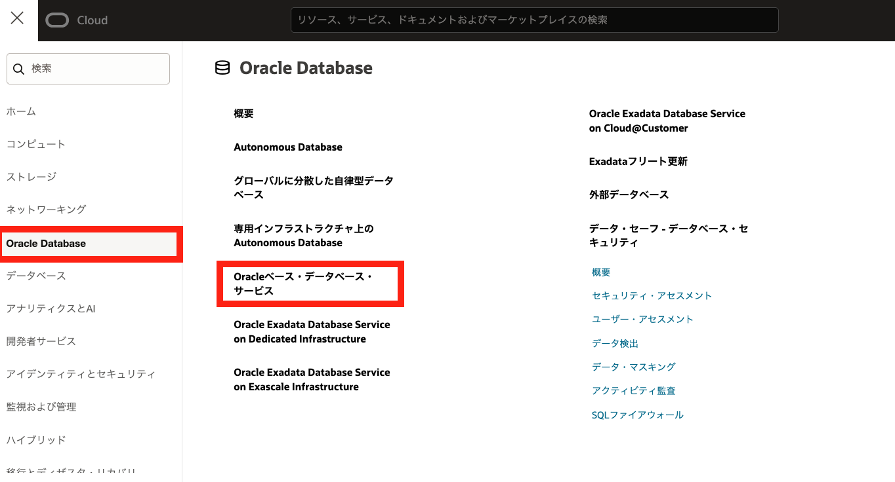

はじめに
Data Guardは、Oracle Database自身が持つレプリケーション機能です。 プライマリDBの更新情報（REDOログ）をスタンバイDBに転送し、そのREDOログを使ってリカバリし続けることでプライマリDBと同じ状態を維持します。 Data Guard GroupもしくはData Guard Associationを使用している場合、Oracle Database Autonomous Recovery Service（RCV/ZRCV）およびOCI Object Storageをバックアップの保存先として、プライマリ・データベースだけでなくスタンバイ・データベースにも自動バックアップの設定をすることができます。
このチュートリアルではBase Database Service (BaseDB) のスタンバイ・データベースに自動バックアップを設定する方法を紹介します。
バックアップの取得先について
今回はOracle Database Autonomous Recovery Serviceを例として取り上げていますが、OCI Object Storageでも同様の手順で設定可能です。
前提条件 :
-
106: Data Guardを構成しようを通じてData Guard構成が完了していること
-
Oracle Database Autonomous Recovery Service（RCV/ZRCV）およびOCI Object Storageを利用する上での事前準備が完了していること
-
プライマリとスタンバイのバックアップの取得先は統一すること
注意 チュートリアル内の画面ショットについては現在の画面と異なっている場合があります。
目次
所要時間 : 約90分
1. スタンバイ・データベースで自動バックアップを有効化しよう
BaseDBの場合、Oracle Data Guardを有効にすると、スタンバイ・データベース用に新しいDBシステムが作成され、Data Guardアソシエーションが構成されます。 Data Guardアソシエーションの構築が完了したら、スタンバイ・データベースの詳細画面に移動して自動バックアップを有効にします。
自動バックアップの設定タイミングについて
プライマリ・データベースの自動バックアップを設定する際は、プライマリ・データベース作成時に自動バックアップの構成をすることができますが、スタンバイ・データベースへの自動バックアップの設定は、スタンバイ・データベース作成後に実施します。スタンバイ・データベース作成時に自動バックアップの設定をすることはできません。
まず、ナビケーションメニューから、「Oracle Database」>「Oracleベース・データベース・サービス」をクリックします。

自動バックアップを構成するスタンバイ・データベースのプライマリ・データベースを含むDBシステムの名前をクリックします。
データベースの詳細画面を下にスクロールし、「リソース」>「データベース」からプライマリ・データベースの名前をクリックします。

「プライマリ・データベースの詳細」ページを下の方にスクロールし、「Data Guardアソシエーション」をクリックします。ピア・データベースから自動バックアップを構成するスタンバイ・データベースの名前をクリックします。
「スタンバイ・データベース詳細」ページで「自動バックアップの有効化」をクリックしてバックアップを構成します。 ここでは、詳細画面に「スタンバイ」と表示されていることを確認してから操作しましょう。
「データベース・バックアップの構成」で「自動バックアップの有効化」を選択し、今回は「バックアップの保存先」として「Autonomous Recovery Service (推奨)」を選択します。
入力項目と入力内容
- 自動バックアップの有効化: 有効化するためにチェック
- バックアップの保存先：「自律型リカバリ・サービス(推奨)」（デフォルト）を選択します
- 保護ポリシー：事前設定された保持期間のポリシー、または、事前定義したカスタム・ポリシーを選択します。保護ポリシーの設定に従って、バックアップの保管場所と保持ロックの有無の情報も表示されます。
- リアルタイム・データ保護：
 REDO転送オプションの有無を選択します。
REDO転送オプションの有無を選択します。
REDO転送オプションについて
リカバリ・サービスには2種類のタイプがあります。Autonomous Recovery Service (RCV) とZero Data Loss Autonomous Recovery Service (ZRCV) です。
この2種類の違いは、REDO転送オプションの有無です。RCVはREDO転送オプション無し、ZRCVがREDO転送オプションありのタイプです。
REDO転送オプションを有効化すると、リアルタイムREDO転送が実施されるため、DBストレージ上のREDOログを損失する障害においても、0に近いリカバリ・ポイント目標(RPO)が提供されます。
- チェックボックスにチェックあり ＝ Zero Data Loss Autonomous Recovery Service (ZRCV) を利用
- チェックボックスにチェックなし ＝Autonomous Recovery Service (RCV) を利用
- データベース終了後の削除オプション：データベースの終了後に保護されたデータベース・バックアップを保持するために使用できるオプション。データベースに偶発的または悪意のある障害が発生した場合にバックアップからデータベースをリストアする場合にも役立ちます。
- 日次バックアップのスケジュール時間(UTC)：増分バックアップが開始される時間ウィンドウを指定します。
- 最初のバックアップをすぐに作成します：最初の完全バックアップを延期することを選択した場合、データベース障害が発生してもデータベースがリカバリできない可能性があります。
すべての項目を入力し終わったら「変更の保存」をクリックします。
「最初のバックアップをすぐに作成します」のチェックボックスを有効化した場合は、自動バックアップを有効化してすぐにバックアップ処理が開始され、データベースのステータスが「バックアップ進行中」に変更されます。
「データベース詳細」ページには、「自動バックアップ」ステータスと詳細が「バックアップ」セクションに表示されます。

下にスクロールし、「バックアップ」タブを開くと取得中のバックアップが表示されます。この状態で、初回バックアップが完了するまで待ちます。
2. スタンバイ・データベース・バックアップからのデータベースを作成しよう
今度は、スタンバイ・データベース・バックアップから取得したバックアップを使用して、新規データベースを作成してみましょう。
「スタンバイ・データベースの詳細」ページで、「バックアップ」をクリックします。
「バックアップ」セクションで、リストアするバックアップを選択します。
そしてバックアップの「アクション」メニューをクリックし、「データベースの作成」をクリックします。
「バックアップからのデータベースの作成」ウィンドウで必要項目を入力します。
※設定方法は新規作成時と同様です。入力項目はOracle CloudでOracle Databaseを使おうをご参照下さい。
情報を入力し終わったら「DBシステムの作成」をクリックします。
「DBシステムの作成 」をクリックします。

DBシステムの作成が開始されます。
作業が完了するとステータスがPROVISIONING… から AVAILABLE に変わります。
選択したリージョンおよび可用性ドメインに新しいデータベースが作成されます。
以上で、この章の作業は完了です。